The gWTO2 (gui for What To Observe Cycle 2) Documentation¶
Using gWTO2¶
Latest update: July 14, 2014

Screenshot of gWTO2 RC
Starting the GUI¶
gWTO2 is tested and deployed at the osf-red machine, within the aod account. A virtual environment of python, based on the Anaconda distribution, must be loaded before using it. This is achieved by running:
. activateC2Test
The Anaconda distribution is based on python 2.7.6 and includes numpy, pandas, pyephem and other libraries need by gWTO.
The gui is run executing the gWTO2.py comand:
Usage: gWTO2.py arg1 [options]
arg1 must be BL or ACA
Options:
-h, --help show this help message and exit
-c, --clean Force clean up of gWTO2 cache
-p PATH, --path=PATH Path for cache
So, to run gWTO2 for baseline correlator use argument BL, and ACA for Total Power and ACA. The -c option should only be used once per day.
I would also recommend to set the option -p to something like '/.wto_myname/' so different users running gWTO won’t mess up the cache for each other. After playing with gWTO2 using a different path, please delete the directory created with the name .wto_myname
The gWTO2 window¶
After starting gWTO2 BL you will be presented with the gui shown on Figure 2. If the -c option was used, or the cache have been manually erased it, the time until the gui is ready can be up to 5-7 minutes.

Figure 2
The gui for ACA (gWTO2 ACA) is almost the same, except for the lack of Array Options, and the presence of a tab TP that will be used for handling Total Power SBs.
Setting up variables¶
After opening, the Date will be by default the current UTC time, PWV is set to 1.2 mm., the Horizon limit is 20 degrees, minHA, minimum hour angle, is -5 and maxHA, maximum hour angle, is 3. The LST field is not editable, and it shows the LST for the date/time set in the Date field.
- (For BL GUI only.)
- The box with the array variables will have the Std. Conf.: field set to Current Conf. This Current Conf. comes from the output of the CASA script arrayConfigurationTools.py, which can be found at ~/AIV/science/ArrayConfiguration/Tools/arrayConfigurationTools.py. It is made with the antennas that in principle can be used for the current ES Block. It is the AoD Lead’s duty to create the relevant files from time to time to account for antenna movements or new antennas added. (Instructions)
- (For BL GUI only.)
- The values given at Array AR: and Antennas: are set according to the current array’s angular resolution and number of antennas offered officially for cycle 2. The only field you can modify at this stage in the ‘Antenna’ field, which is the number of antennas. The idea is that the user will use this information to have an idea of the current configuration characteristics, and to run gWTO2 to plan observations ahead of time, or when Baseline arrays have not been created in the last 6 to 12 hours.
- (For BL GUI only, when observing.)
- The user should press the button Now, and a pop up window similar to the one shown in Figure 3 will appear.

Figure 3
The window show the normalized histogram of the baseline lengths, and a fit to this distribution, taking the data from latest Baseline Array created. From this distribution the array’s resolution is estimated, and the number of antennas is also show. The user should check that the array resolution is close the the “Current Conf.” value, and that no outliers are fitted. If happy press the OK button, and this will set the Array AR: and Antennas: fields in the main window. If Cancel is pressed instead, the main window will go back to Current Conf.. Also, when accepting the new array estimates you will not longer be able to change the number of antennas unless you go back to :keyword”Current Conf.
The BL Arrays: Combo menu is also populated with the list of the baselines arrays created in the last 6 to 12 hours.
- For ACA GUI only
- The number of antennas is 9 by default. Change the number according to the number of antennas that are available.
Running¶
When you are happy with the Date, PWV and array variables (also the Horizon, minHA and maxHA values) you can run the selector and scoring algorithms pressing the button Run.
After an interval of a few seconds (5 to 15 seconds) you will be presented with something similar to Figure 4.

Figure 4
Reading the output Scores¶
Standard (ACA) Tab in BL (ACA) GUI¶
- Score: The score is the weighted mean of different scores calculated
for each observable SB. The score is a value between 0 and 10,
10 being the highest score.
- Condition Score, 35%. A score depending on the current PWV, number of available antennas, and pwv used by the OT.
- Array Score, 20%. Depends in how close to the current array’s resolution is the SB asked angular resolution. For ACA and TP this is fixed to 10.
- SB Completition Score, 15%. SBs already started and closer to be completed get higher scores
- Letter Grade Score, 15%. Score given by Cycle and letter grade.
- Executive Score, 10%. Score given by the executive of the Project.
- Science Rank Score, 5%. Score given by the scientific ranking of the project.
- CODE: Project Code
- SB UID: Scheduling Block’s UID
- SB Name: Scheduling Block’s Name
- SB State: Scheduling Block’s state, or status, taken from the project tracker
- Band: Receiver(s) asked by the SB.
- RA: Representative Right Ascension.
- DEC: Representative Declination.
- HA: Hour Angle for the given date and time.
- Elev.: Elevation, in degrees, for the given date and time.
- Sets in: Time left until the first of the field sources (science targets) goes down the horizon limit. This calculated by checking the field sources coordinates of the SB, and not by the representative coordinates.
- Exec. Req.: Number of executions requested for this SB.
- Exec. Done.: Number of execution blocks for this SB, that have the QA0 status set to PASS, or in Unset state.
- TsysFrac: Given the TSys assumed by the PI in the OT, and the actual TSys with the given pwv, this is the multiplicative factor for the time on source (integration time) to reach the sensitivity asked by the PI. E.G., if the TSysFrac is 0.8 it means that with the 80% of the asked integration time the rms will be achieved.
- BLFrac.: Given the current number of antennas and array configuration the number of usable baselines is calculated, and is compared with the SB requirements, e.g., 34 antennas for BL, 9 for ACA. The ratio of these two number gives the corrective factor needed to achieve the PI requested rms. E.G., if the factor is 1.22, it means that the ToS should be a 22% higher to achieve the rms.
- TotalFrac.: The total multiplicative factor for the time on source needed given the calculated TsysFrac and BLFrac. If TotalFrac is higher than 1.3, which means that if the SB is run with these conditions the rms achieved would be sqrt(1/1.3) ~ 87% of the asked rms, the whole row will have a red background. This does not mean the AoD should change the ToS, unless a clear policy has been given by PMG or the ES leader.
- Array Score: The array score, given for information purposes.
- Cond. Score: The condition score, given for information purposes.
- maxPWVC: The PWV used by the PI/P2G on the OT to calculate how much integration time is needed to get the sensitivy requested.
- ArrayMinAR: The minimum array’s resolution that the current SB will accept. This value comes from Stephane’s script, and is corrected for all SBs to the equivalent resolution at a 100GHZ and a source that would transit at zenith.
- ArrCorr: The angular resolution requiered by the SB, corrected to the equivalent resolution at 100GHz and source with DEC -23.
- ArrayMinAR: The maximum array’s resolution that the current SB will accept.
- LASCorr: The largest angular scale required by the SB, corrected to the equivalent scale at 100GHz and source with DEC -23.
- TimeOnSource: Integration time, in seconds, for the science target(s). In the case of multisources, this time should be multiplied by the number of sources.
- PRJ UID: The SB’s project UID.
- Grade: Grade letter for the SB’s project.
Selection and Score algorithms¶
Selection and Data preparation (wtoAlgorithm.WtoAlgorithm.selector())¶
Calculate observability using the pyephem libraries.
For all the science field sources of an SB and fixed calibration sources, we calculate the current elevation, rise LST and set LST. If a field source is a Solar System object, or an ephemeris source, we calculate first the current RA and DEC, and then the other parameters. The current elevation for the SB comes from the source with the minimun elevation; the rise LST for the SB is the LST of the source that would rise last; and the set LST for the SB is the LST of the source that would set first. The rise and set LST are calculated using the elevation limit (horizon) gave as an input for gWTO.
Relavant XML child/tag or gWTO2 variables:
- SchedBlock.FieldSource[‘solarSystemObject’]
- SchedBlock.FieldSource.sourceCoordinates.longitude
- SchedBlock.FieldSource.sourceCoordinates.latitude
- SchedBlock.FieldSource.isQuery
- SchedBlock.FieldSource.sourceEphemeris
- Date, horizon limit.
Select SB by array type: 12m, 7m, TP.
Relavant XML child/tag or gWTO2 variables:
- SchedBlock.ObsUnitControl[‘arrayRequested’]
- Array Type.
Calculate opacity, airmass and sky Temperature.
For both the OT asumed conditions and current, actual, conditions, based on the current PWV.
The implementation has several steps:
- First, a table with values of Tau as fuction of PWV and representative frequencies was created. The file with this tables, in csv format, is called tau.csv. The frequencies are between 84.0 and 720.0 GHz, with steps of 100 MHz; pwv values are between 0.0 and 20.0 mm, in steps of 0.05. The values were calculated using the atmosphere model algorithms from CASA 4.2.1, using as input variables , , 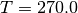, 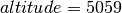 and 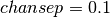.
- A table with Tsky values as function of PWV and representative frequencies was also create. The file with this table, in csv format, is called tskyR.csv. Description of columns, rows, and values is the same as the table tau.csv, the only addition, is that the Tsky in the tables assumes the airmass of a source at Zenith.
- Internaly, four columns are created for all SBs: tau_org and tsky_org, storing the value of tau and tsky for the conditions assumed by the OT, i.e., pwv from maxPWVC; tau and tsky, storing the values of tau and tsky for the current conditions, i.e., pwv from the gui’s PWV variable.
Relavant XML child/tag or gWTO2 variables:
- SchedBlock.Preconditions.WeatherConstraints.maxPWVC
- SchedBlock.SchedulingConstraints.representativeCoordinates.latitude
- SchedBlock.SchedulingConstraints.representativeFrequency
- Date, current PWV
- Tsky and Tau tables.
Calculate system Temperatures.
Two columns are genrated for each SB: tsys_org and tsys, one for the OT’s assumed conditions and the other for the current conditions. Tsys, for both cases, is calculated using:
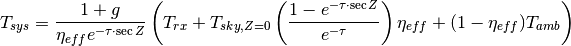
Where
 is the sideband gain ratio (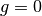 for SSB and 2SB
receivers, 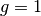 for DSB); 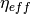 is the forward efficiency,
which is set to a value of 0.95; 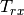 is the receiver characteristic
temperature;
is the sideband gain ratio (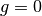 for SSB and 2SB
receivers, 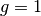 for DSB); 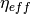 is the forward efficiency,
which is set to a value of 0.95; 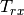 is the receiver characteristic
temperature;  is the oppacity for a source at zenithal distance
;
is the oppacity for a source at zenithal distance
;  is the zenithal distance of the representative source
at transit: 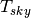 is the sky temperature at ; and
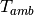 is the ambient temperature, set to a fixed value of
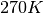.
is the zenithal distance of the representative source
at transit: 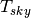 is the sky temperature at ; and
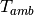 is the ambient temperature, set to a fixed value of
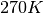.Relavant XML child/tag or gWTO2 variables:
- SchedBlock.SchedulingConstraints.requiredReceiverBands
SBs within spectral ranges with transmission higher than 50% are first selected.
For gWTO1, we use to have a limit of 70%, which change to 50% when the pwv was under 0.6 mm. For gWTO2 we set the limit to 50%, and a more accurate selection is applied later using 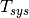 The transmission is calculated from the previously found 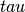 for the current conditions:
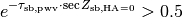
where 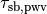 is the oppacity for the representative source of a scheduling block sb and with the current PWV 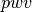; and 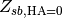 is the zenithal distance for the representative source of sb at transit.
Relavant XML child/tag or gWTO2 variables:
Select SBs within given HA limits.
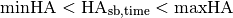
(mihHA = -5 and maxHA = 3 by default).
Relavant XML child/tag or gWTO2 variables:
- LST
Select SBs over the given elevation limit (20 deg. default) and that won’t set for at least 1 1/2 hours.

Relavant XML child/tag or gWTO2 variables:
- LST
- Horizon Limit
- SB set time
Remove SBs with states Phase2Submitted, FullyObserved and Deleted.
Relavant XML child/tag or gWTO2 variables:
- This information comes from the ALMA.SCHED_BLOCK_STATUS.
Remove SBs that belongs to projects with status Phase2Submitted or Completed.
Relavant XML child/tag or gWTO2 variables:
- This information comes from the ALMA.OBS_PROJECT_STATUS, and is crosschecked against ALMA.BMMV_OBSPROJECT
Remove SBs that have names like “Do not”.
Currently the OT is not able to handle the SB status “Deleted”, so SBs that are supposed to be deleted are set to status “Suspended”, and the name changed to a varation of “DO NOT OBSERVE”, “Do_not_observe”, “DO not observe descoped”, etc., depending on the mood of the P2G. The only thing in common is the presence of a “do not”. Any SB with those words in the name is removed.
Relavant XML child/tag or gWTO2 variables:
- SchedBlock.name
Remove SBs where the number of requested executions has been achieved
Given the requested number of executions of a SB (executionCount), check if any EB are associated to this SB, and add up the ones with QA0 flags Unset and Pass. If this last number is equal or higher than executionCount we don’t select the SB.
When a QAO Unset flag is set to Fail or Semipass, the number of assoc. EB will go down, and then an SB can be back on the list. This method avoids over-observing of an SB.
Relavant XML child/tag or gWTO2 variables:
- SchedBlock.SchedBlockControl.executionCount
- QA0STATUS column FROM ALMA.AQUA_EXECBLOCK
Select SBs that can be executed with the current array’s angular resolution
Using the minAR and maxAR limits, corrrected by Stéphane’s script and transformed to the equivalent AR at 100GHz, we select SBs that would accept current array’s configuration as set in Array AR::
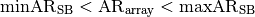
Relavant XML child/tag or gWTO2 variables:
- SchedBlock.SchedulingConstraints.minAcceptableAngResolution
- SchedBlock.SchedulingConstraints.maxAcceptableAngResolution
- minAR, maxAR, Stéphane’s script
- Array AR:
Calculate tsysfrac, blfrac and frac columns

Score and ranking¶
Checking observability¶
TSys time fraction calculation¶
The TSys time fraction comes from equation:

Where  is the system temperature calculated with the
current PWV at the representative frequency of the SB corrected by airmass at
transit, and
is the system temperature calculated with the
current PWV at the representative frequency of the SB corrected by airmass at
transit, and  is the system temperature calculated using the
PWV set by the PI/P2G to calculate the integration time in the OT, also at the
representative frequency and at transit.
is the system temperature calculated using the
PWV set by the PI/P2G to calculate the integration time in the OT, also at the
representative frequency and at transit.
Playing with the libraries:¶
. activateC2Test
ipython
Once in ipython::
import wtoAlgorithm as wto
import ephem
import pandas as pd
datas = wto.Algorithm(path='./wto_testing/')
And the run the following script. You can copy the code, and then paste into python with %paste, or donwload the file, and then load the function with execfile(‘runwto.py’):
def runwto(pwv, array_name=None, d=None, num_ant=34):
datas.query_arrays()
if array_name == 'default':
array_name = None
datas.set_bl_prop(array_name)
else:
array_name = datas.bl_arrays.AV1.values[0]
datas.set_bl_prop(array_name)
datas.array_ar = 61800 / (100. * datas.ruv.max())
if d == None:
d = ephem.now()
if num_ant != 34:
datas.num_ant = num_ant
datas.array_name = array_name
datas.update()
datas.date = d
datas.pwv = pwv
datas.selector('12m')
datas.scorer('12m')
print datas.score12m.sort(
'score', ascending=False).query(
'band != "ALMA_RB_04" and band '
'!= "ALMA_RB_08" and isPolarization == False')[
['score','CODE','SB_UID','name','SB_state','band','maxPWVC', 'HA',
'elev','etime', 'execount','Total','arrayMinAR','arcorr',
'arrayMaxAR','tsysfrac', 'blfrac','frac','sb_array_score',
'sb_cond_score', 'DEC','RA', 'isTimeConstrained',
'integrationTime', 'PRJ_ARCHIVE_UID']].head(25)
datas.num_ant_user = 34
The to run the wto algorithm use a pwv value between 0 and 20, with steps of 0.05 (e.g., 0.4, 0.45, but no 0.42), and assuming the latest BL Array. Set array_name='default' when running runwto (e.g. runwto(X.XX, array_name='default')) to use the Current configuration parameters calculated with arrayConfigurationTools and 34 antennas. Also, to change the date to current date use runwto(X.XX, d=ephem.Date('2014-06-28 03:45')
This will display the top 25 values of datas.scorer12m dataFrame. To check full output in an excel table run::
datas.score12m.to_excel('output_path/score.xls')
Where output_path is the full path to the directory where you want to save the score.xls excel spreadsheet.
The WTO API¶

Figure 4, UML diagram of wtoAlgorithm.py
The WTO Data Frames¶
wtoDatabase.obsprojects¶
Main obsproject table ingested from queries to the archive.
SELECT PRJ_ARCHIVE_UID,DELETED,PI,PRJ_NAME,
CODE,PRJ_TIME_OF_CREATION,PRJ_SCIENTIFIC_RANK,PRJ_VERSION,
PRJ_ASSIGNED_PRIORITY,PRJ_LETTER_GRADE,DOMAIN_ENTITY_STATE,
OBS_PROJECT_ID
FROM ALMA.BMMV_OBSPROJECT obs1, ALMA.OBS_PROJECT_STATUS obs2
WHERE regexp_like (CODE, '^201[23].*\.[AST]')
AND (PRJ_LETTER_GRADE='A' OR PRJ_LETTER_GRADE='B'
OR PRJ_LETTER_GRADE='C')
AND obs2.OBS_PROJECT_ID = obs1.PRJ_ARCHIVE_UID
| COLUMN | VALUE |
|---|---|
| PRJ_ARCHIVE_UID | (string) Project UID |
| DELETED | (boolean int) Is Deleted? |
| PI | (string) Principal Investigator |
| PRJ_NAME | (string) Project Name |
| ** CODE | (string) Project Code (Index) |
| PRJ_TIME_OF_CREATION | (string) Project creation timestamp |
| PRJ_SCIENTIFIC_RANK | (int64) Project Rank |
| PRJ_VERSION | (string) Project Version |
| PRJ_ASSIGNED_PRIORITY | (object) None |
| PRJ_LETTER_GRADE | (string) Project Grade |
| DOMAIN_ENTITY_STATE | (string) Project Status (ProTrack) |
| OBS_PROJECT_ID | (string) Project UID |
| EXEC | (string) Executive |
| timestamp | (datetime64[ns]) Project latest update date |
| obsproj | (string) Obsproject XML filename |
wtoDatabase.sciencegoals¶
| COLUMN | VALUE |
|---|---|
| CODE | (string) Project Code |
| ** partId | (string) Science Goal partId (Index) |
| AR | (float64) Desired angular resolution (arcsec) |
| LAS | (float64) Largest scale (arcser) |
| bands | (string) ALMA Band |
| isSpectralScan | (boolean) |
| isTimeConstrained | (boolean) |
| useACA | (boolean) |
| useTP | (boolean) |
| SBS | (list of str) ScienceGoal SBs |
| startRime | (string) Time constrain start |
| endTime | (string) Time constrain end |
| allowedMargin | (float64) TC allowed margin |
| allowedUnits | (string) units |
| repeats | (int) |
| note | (string) Time constrain notes |
| isavoid | (boolean) |
wtoDatabase.schedblocks¶
| COLUMN | VALUE |
|---|---|
| SB_UID | object |
| partId | object |
| timestamp | datetime64[ns] |
| sb_xml | object |
wtoDatabase.schedblock_info¶
| COLUMN | VALUE |
|---|---|
| SB_UID | (string) |
| partId | (string) |
| name | (string) |
| status_xml | (string) |
| repfreq | (float64) |
| band | (string) |
| array | (string) |
| RA | (float64) |
| DEC | (float64) |
| minAR_old | (float64) |
| maxAR_old | (float64) |
| execount | (float64) |
| isPolarization | (boolean) |
| amplitude | (string) |
| baseband | (string) |
| polarization | (string) |
| phase | (string) |
| delay | (string) |
| science | (string) |
| integrationTime | (float64) |
| subScandur | (float64) |
| maxPWVC | (float64) |
wtoDatabase.target¶
| COLUMN | VALUE |
|---|---|
| SB_UID | (string) |
| specRef | (string) |
| fieldRef | (string) |
| paramRef | (string) |
wtoDatabase.fieldsource¶
| COLUMN | VALUE |
|---|---|
| fieldRef | object |
| SB_UID | object |
| solarSystem | object |
| sourcename | object |
| name | object |
| RA | float64 |
| DEC | float64 |
| isQuery | object |
| intendedUse | object |
| qRA | object |
| qDEC | object |
| use | object |
| search_radius | object |
| rad_unit | object |
| ephemeris | object |
| pointings | float64 |
| isMosaic | object |
wtoDatabase.spectralconf¶
| COLUMN | VALUE |
|---|---|
| specRef | object |
| SB_UID | object |
| BaseBands | float64 |
| SPWs | float64 |
wtoDatabase.sb_summary (“view”)¶
| COLUMN | VALUE |
|---|---|
| CODE | object |
| OBS_PROJECT_ID1 | object |
| partId | object |
| SB_UID | object |
| name | object |
| status_xml | object |
| bands | object |
| repfreq | float64 |
| array | object |
| RA | float64 |
| DEC | float64 |
| minAR | float64 |
| maxAR | float64 |
| arrayMinAR | float64 |
| arrayMaxAR | float64 |
| execount | float64 |
| PRJ_SCIENTIFIC_RANK | float64 |
| PRJ_LETTER_GRADE | object |
| EXEC | object |
| OBSUNIT_UID | object |
| NAME | object |
| REPR_BAND | float64 |
| SCHEDBLOCK_CTRL_EXEC_COUNT | float64 |
| SCHEDBLOCK_CTRL_STATE | object |
| MIN_ANG_RESOLUTION | float64 |
| MAX_ANG_RESOLUTION | float64 |
| OBSUNIT_PROJECT_UID | object |
| DOMAIN_ENTITY_STATE | object |
| OBS_PROJECT_ID | object |
| QA0Unset | float64 |
| QA0Pass | float64 |
| Total_exe | float6 |
wtoDatabase.qa0¶
| COLUMN | VALUE |
|---|---|
| SCHEDBLOCKUID | object |
| QA0STATUS | object |
wtoDatabase.scheduling_proj¶
Queries project data from the SCHEDULING_AOS archive tables.
SELECT *
FROM SCHEDULING_AOS.OBSPROJECT
WHERE regexp_like (CODE, '^201[23].*\.[AST]')
| COLUMN | VALUE |
|---|---|
| OBSPROJECTID | SQL index |
| OBSPROJECT_UID | OBSPROJECT xml entity UID |
| CODE | Project CODE |
| NAME | Project Name |
| VERSION | Project Version |
| PI | Principal Investigator user name |
| SCIENCE_SCORE | Science Score |
| SCIENCE_RANK | Science Ranking |
| SCIENCE_GRADE | Project letter grade |
| STATUS | Project status in SCHEDULING_AOS |
| TOTAL_EXEC_TIME | |
| CSV | Is CSV? |
| MANUAL | Is Manual Mode? |
| OBSUNITID | Obsunit part ID |
| STATUS_ENTITY_ID | |
| STATUS_ENTITY_ID_ENCRYPTED | |
| STATUS_ENTITY_TYPE_NAME | |
| STATUS_SCHEMA_VERSION | |
| STATUS_DOCUMENT_VERSION | |
| STATUS_TIMESTAMP |
wtoDatabase.scheduling_sb¶
Queries scheduling block data from SCHEDULING_AOS tables.:
SELECT ou.OBSUNIT_UID,sb.NAME,sb.REPR_BAND,
sb.SCHEDBLOCK_CTRL_EXEC_COUNT,sb.SCHEDBLOCK_CTRL_STATE,
sb.MIN_ANG_RESOLUTION,sb.MAX_ANG_RESOLUTION,
ou.OBSUNIT_PROJECT_UID
FROM SCHEDULING_AOS.SCHEDBLOCK sb, SCHEDULING_AOS.OBSUNIT ou
WHERE sb.SCHEDBLOCKID = ou.OBSUNITID AND sb.CSV = 0
| COLUMN | VALUE |
|---|---|
| OBSUNIT_UID | object |
| NAME | object |
| REPR_BAND | int64 |
| SCHEDBLOCK_CTRL_EXEC_COUNT | int64 |
| SCHEDBLOCK_CTRL_STATE | object |
| MIN_ANG_RESOLUTION | float64 |
| MAX_ANG_RESOLUTION | float64 |
| OBSUNIT_PROJECT_UID | object |